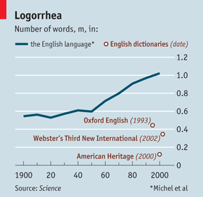

Suchen um zu lesen - Chancen digitaler Texte

Grafik: Book vs Internet 1800 - 2000 im Books Ngram Viewer: Gab es um 1900 schon mal ein Internet? :-)
Hintergrund der Artikel in der NZZ bildet ein Paper in Science, in welchem gezeigt wird, wie die gewaltige Datenmenge der von Google digitalisierten Bücher mit quantitativen Methoden für die Forschung nutzbar gemacht werden kann.
Vor gut zwei Wochen berichtete bereits der Economist über das Paper. So konnte man lesen, mit welchen Problemen sich die Wissenschaftler bei der statistischen Analyse von Texten herumzuschlagen haben (Schreibfehler, Daten, Akronymen). Auch ein paar interessante Erkenntnisse bezüglich des Umfangs des Wortschatzes und dessen Abdeckung in Wörterbüchern wurden erwähnt.
In der NZZ findet sich im Teil "Forschung und Technik" ein Artikel, welcher auf die interessanten Aspekte des wissenschaftlichen Aufsatzes eingeht, in "Meinung & Debatten" und dem Feuilleton finden sich erstaunlich kulturpessimistische und ablehnende Artikel. Im Grundtenor wird kritisiert, dass Texte so nicht mehr gelesen sondern nur noch benutzt würden (suchen statt lesen).
"Das genaue und emphatische Lesen (man kann es auch zweckfreies Lesen nennen) dürfte in den letzten Jahren etwas aus der Mode gekommen sein. Auf dem Vormarsch dagegen befinden sich die Benutzer der Texte."
Wer so argumentiert, der nimmt die wichtigste Motivation ein Buch zu lesen nicht ernst: das Lesevergnügen. Natürlich ist die Volltextsuche nichts anderes als ein Werkzeug um Inhalte zu kategorisieren. Solche Kategorisierungen gab es in Bibliotheken schon immer; keiner wäre jedoch auf die Idee gekommen, das Suchen im Register dem Lesen eines Buches vorzuziehen. Wo bliebe da der Lesespass!
Ganz unabhängig davon ob die von den Autoren des Science-Papers postulierte neue Forschungsrichtung names "Culturomics" jemals Früchte tragen wird, die Digitalisierung, Indexierung und quantitative Erschliessung von Texten ist auf jeden Fall sehr positiv zu bewerten.
Werden Texte und Daten online verfügbar gemacht, so kann man von einer Demokratisierung des Wissens sprechen. Ich als Laie kann nun - auch ohne das Gesamtwerk eines Autors zu kennen - dessen Werk thematisch durchforsten. Natürlich bin ich so noch weit von einem tieferen Verständnis entfernt, die Eintrittshürde aber sinkt. Auch für diese Demokratisierungsthese spricht die ablehnende Haltung der Feuilleton-Leute: sie verhalten sich als würde ungebetene Gäste in den Garten, welchen sie bisher sorgsam gehegt und gepflegt haben, eindringen. Culturomics bringt neue Forscher und damit neue Konkurrenz in die Geisteswissenschaften.
Mit den neuen Methoden der Culturomics lassen ganz andere Fragestellungen untersuchen als mit der klassischen Hermeneutik. Für die nach Erkenntnis strebe Wissenschaft ist dies per se ein Gewinn.
Schliesslich singt der NZZ-Author das altbekannte Lied der Probleme der
Haltbarkeit von digitalen Texten. Im Falle von Google Books ist es technisch
gesehen aber Unsinn von der beschränkten Haltbarkeit von Datenträgern zu
schreiben. Die Daten sind nicht auf einem einzelnen, vom Verfall bedrohten,
Datenträger (CD) gespeichert, sondern in der Cloud. Natürlich liegen auch der
Cloud physische Datenträger zu Grunde, Speicherkapazitäten werden da aber viel
dezentraler und nach Bedarf bezogen.
Beim Brand der klassischen Bibliothek von Alexandria ging sehr viel Wissen
verloren. Dank dem Digitalisierungsprojekt von Google sind heute viele bereits
vergriffene Bücher wieder verfügbar und können auch durch eine Feuersbrunst
nicht zerstört werden.
Die Digitalisierung von Texten ist ein Projekt der Fortschritts!

Grafik: NZZ vs FAZ 1800 - 2000 im Books Ngram Viewer
http://ngrams.googlelabs.com/ http://www.culturomics.org/
http://www.economist.com/node/17730198
http://www.nzz.ch/nachrichten/startseite/suchen_statt_lesen_1.8925645.html